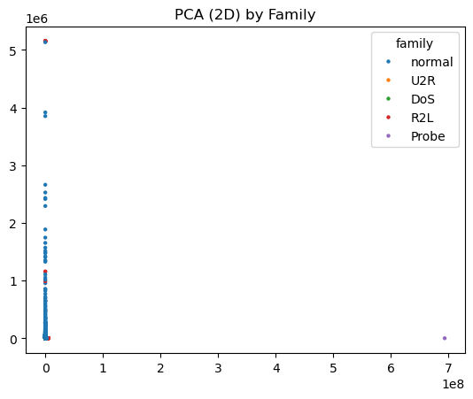

import warnings
warnings.filterwarnings("ignore")Week 02 — Exploratory Data Analysis (EDA)
Objective. Visualize distributions, correlations, categorical frequencies, and low-dimensional structure.
import os, sys
sys.path.append(os.path.abspath("..")) # from notebooks/ to project root
from src.utils import set_global_seed, Paths
set_global_seed()
print("Import OK.", Paths)Import OK. <class 'src.utils.Paths'>from src.utils import Paths, set_global_seed
from src.io import load_raw_nsl_kdd, map_attack_family
from src.plots import dist_plots, corr_heatmap, topn_bar
import pandas as pd
import numpy as np
import matplotlib.pyplot as plt
import seaborn as sns
from sklearn.decomposition import PCA
from sklearn.manifold import TSNE
try:
import umap
except:
umap = None
paths = Paths().ensure()
set_global_seed(42)
raw_path = paths.data_raw / 'NSL-KDD.raw'
print('Loading from:', raw_path)
df = map_attack_family(load_raw_nsl_kdd(raw_path))
df.shapeLoading from: C:\Users\mehra\Final_Project\data\raw\NSL-KDD.raw(494021, 43)# Distributions. (Plot histogram + KDE for selected numeric features on a stratified sample.)
import numpy as np
import pandas as pd
from src.utils import Paths, set_global_seed
from src.io import load_raw_nsl_kdd, map_attack_family
from src.plots import dist_plots
paths = Paths().ensure()
set_global_seed(42)
raw_path = paths.data_raw / 'NSL-KDD.raw'
df = map_attack_family(load_raw_nsl_kdd(raw_path))
# Limit to top 3 by frequency
top_fams = df['family'].value_counts().head(3).index
df_small = df[df['family'].isin(top_fams)].copy()
print("Using families:", list(top_fams))
# Take a MUCH SMALLER stratified sample per family
sample_per_family = 500
df_sample = (
df_small
.groupby('family', group_keys=False)[df_small.columns]
.apply(lambda x: x.sample(min(sample_per_family, len(x)), random_state=42))
)
print("Sampled rows:", len(df_sample))
# Use only a FEW numeric columns
numeric_cols = [
c for c in df_sample.columns
if c not in ['protocol_type', 'service', 'flag', 'label', 'family']
]
sel = numeric_cols[:3]
print("Columns to plot:", sel)
dist_plots(df_sample, sel, paths.figs)
print('Saved distribution plots for columns:', sel)
print('Figures directory:', paths.figs)Using families: ['DoS', 'normal', 'Probe']
Sampled rows: 1500
Columns to plot: ['duration', 'src_bytes', 'dst_bytes']
Saved distribution plots for columns: ['duration', 'src_bytes', 'dst_bytes']
Figures directory: C:\Users\mehra\Final_Project\notebooks\figures# Correlation by compute Pearson and Spearman heatmaps on numeric features.
import numpy as np
import pandas as pd
from src.utils import Paths, set_global_seed
from src.io import load_raw_nsl_kdd, map_attack_family
from src.plots import corr_heatmap
paths = Paths().ensure()
set_global_seed(42)
raw_path = paths.data_raw / 'NSL-KDD.raw'
df = map_attack_family(load_raw_nsl_kdd(raw_path))
numeric_cols = [c for c in df.columns if c not in ['protocol_type','service','flag','label','family']]
corr_cols = numeric_cols[:20]
corr_heatmap(df, corr_cols, paths.figs / 'eda_corr_pearson.png', method='pearson')
corr_heatmap(df, corr_cols, paths.figs / 'eda_corr_spearman.png', method='spearman')
print('Saved correlation heatmaps to', paths.figs)Saved correlation heatmaps to C:\Users\mehra\Final_Project\notebooks\figures# Categorical frequencies. (Top-N bars for protocol_type, service, flag.)
topn_bar(df['protocol_type'], 10, paths.figs / 'eda_top_protocol.png', 'Top Protocol Types')
topn_bar(df['service'], 20, paths.figs / 'eda_top_service.png', 'Top Services')
topn_bar(df['flag'], 10, paths.figs / 'eda_top_flag.png', 'Top Flags')
print('Saved categorical frequency plots to', paths.figs)Saved categorical frequency plots to C:\Users\mehra\Final_Project\notebooks\figures# Family imbalance
fam_counts = df['family'].value_counts()
fam_perc = (fam_counts / len(df) * 100).round(2)
display(pd.DataFrame({'count': fam_counts, 'percent': fam_perc}))| count | percent | |
|---|---|---|
| family | ||
| DoS | 391458 | 79.24 |
| normal | 97278 | 19.69 |
| Probe | 4107 | 0.83 |
| R2L | 1126 | 0.23 |
| U2R | 52 | 0.01 |
# PCA visualization.
num_df = df.select_dtypes(include=[np.number])
X = num_df.fillna(0.0).to_numpy()
pca2 = PCA(n_components=2, random_state=42).fit_transform(X)
fig, ax = plt.subplots()
sns.scatterplot(x=pca2[:,0], y=pca2[:,1], hue=df['family'], ax=ax, s=10, linewidth=0)
ax.set_title('PCA (2D) by Family')
fig.savefig(paths.figs / 'eda_pca2.png', dpi=150, bbox_inches='tight')
plt.show()
plt.close(fig)
print('Saved PCA 2D to', paths.figs)
Saved PCA 2D to C:\Users\mehra\Final_Project\notebooks\figures# t-SNE and UMAP.
sample = (
df
.groupby('family', group_keys=False)[df.columns]
.apply(lambda x: x.sample(min(1500, len(x)), random_state=42))
)
X_s = sample.select_dtypes(include=[np.number]).fillna(0.0).to_numpy()
ts = TSNE(n_components=2, random_state=42, perplexity=30, init='pca')
ts2 = ts.fit_transform(X_s)
fig, ax = plt.subplots()
sns.scatterplot(x=ts2[:,0], y=ts2[:,1], hue=sample['family'], s=8, linewidth=0, ax=ax)
ax.set_title('t-SNE (2D) by Family — stratified sample')
fig.savefig(paths.figs / 'eda_tsne.png', dpi=150, bbox_inches='tight')
plt.show()
plt.close(fig)
Saved t-SNE/UMAP plots to C:\Users\mehra\Final_Project\notebooks\figuresNotes
- Heavy-tailed numeric features may benefit from log-scale in later analysis.
- Rare classes (R2L, U2R) present risk for model bias; consider class-weighting/SMOTE in Week 4.